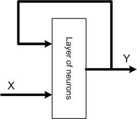
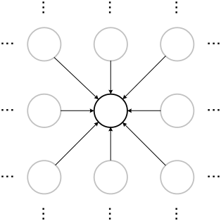

39. Sieci neuronowe w sztucznej inteligencji. Rodzaje i zastosowanie
Sieci neuronowe to rodzaj sztucznej inteligencji, który naśladuje działanie ludzkiego mózgu w celu uczenia się i podejmowania decyzji. Są one zainspirowane budową biologicznych sieci neuronowych, które składają się z neuronów połączonych synapsami.
Podstawową jednostką budulcową sztucznej sieci neuronowej jest perceptron, czyli uproszczony model neuronu. Perceptron przyjmuje jeden lub więcej sygnałów wejściowych, sumuje je (często z ważeniem), a następnie przekształca przy użyciu funkcji aktywacji. Wartość wyjściowa perceptronu jest następnie przesyłana do innych neuronów.
Sieci neuronowe składają się z warstw neuronów:
- Warstwa wejściowa: przyjmuje sygnały wejściowe.
- Warstwy ukryte: przetwarzają sygnały. Może być ich wiele.
- Warstwa wyjściowa: produkuje wynik działania sieci.
Proces uczenia sieci neuronowej polega na dostosowywaniu wag połączeń między neuronami w taki sposób, aby dla danego zestawu danych wejściowych sieć generowała poprawne dane wyjściowe. Jest to zazwyczaj realizowane za pomocą algorytmu zwrotnego rozprzestrzeniania błędu (backpropagation), który minimalizuje błąd między prognozowanym wynikiem a rzeczywistym wynikiem.

Funkcja aktywacji
Funkcja aktywacji w sieci neuronowej pełni kluczową rolę, umożliwiając modelowi uczenie się złożonych wzorców i rozwiązywanie nieliniowych problemów. Bez funkcji aktywacji każda warstwa sieci neuronowej byłaby w zasadzie liniowym transformator, co ograniczałoby moc obliczeniową całej sieci do jednej warstwy, bez względu na to, ile warstw faktycznie posiada.
Definicja
Funkcja aktywacji to matematyczna operacja stosowana do wyjścia neuronu, wprowadzająca nieliniowość do modelu. Działa na poziomie pojedynczego neuronu, przyjmując sumę ważoną jej wejść oraz bias (stałą), a następnie generując wartość wyjściową, która jest przekazywana do następnej warstwy.
Cel
Celem funkcji aktywacji jest:
Wprowadzenie Nieliniowości: Sieci neuronowe mają moc modelowania złożonych, nieliniowych wzorców dzięki nieliniowym funkcjom aktywacji.
Transformacja Wejścia: Przekształcenie wejścia neuronu w wartość wyjściową, której zakres zależy od rodzaju funkcji aktywacji.
Ułatwienie Uczenia: Pomoc w procesie uczenia przez umożliwienie aktualizacji wag w oparciu o gradienty.
Rodzeje sieci neuronowych:
Rodzaj sieci neuronowej zależy od sposobu połączenia neuronów tej sieci oraz od kierunku przepływu sygnałów w sieci. Każdy typ sieci ma własne metody doboru wag, czyli uczenia. Istnieje bardzo wiele rodzajów sieci neuronowych jednak najbardziej podstawowe, obrazujące budowę i sposób działania to:
- sieci jednokierunkowe
- jednowarstwowe
- wielowarstwowe
- sieci rekurencyjne
- sieci komórkowe
Sieci jednokierunkowe których typowym przykładem jest perceptron jednowarstwowy (rys. perceptronu) składają się z neuronów ułożonych w warstwach o jednym kierunku przepływu sygnałów i połączeniach międzywarstwowych jedynie między kolejnymi warstwami. Sieć tego typu posiada warstwę wejściową, wyjściową i warstwy ukryte. Z funkcjonalnego punktu widzenia układ taki można traktować jako układ aproksymacji funkcji nieliniowej wielu zmiennych y = f(u)
Sieci rekurencyjne W sieciach tego typu występuje przynajmniej jedno sprzężenie zwrotne. Oznacza to, że sygnały wyjściowe warstwy podawane są na jej wejścia, co powoduje pewną dynamikę w pracy sieci. Sygnały wejściowe w takiej sieci zależą zarówno od aktualnego stanu wejścia jak i od sygnałów wyjściowych w poprzednim cyklu. Strukturę ogólną takiej sieci przedstawia poniższy rysunek.

Sieci komórkowe W tych sieciach sprzężenia wzajemne między elementami przetwarzającymi dotyczą jedynie najbliższego sąsiedztwa. Połączenia te są w ogólności nieliniowe i opisane poprzez układ równań różniczkowych. Podstawową trudność w stosowaniu tego typu sieci stanowi opracowanie skutecznej, efektywnej i uniwersalnej metody projektowania. Typowym przykładem sieci komórkowej może być sieć typu mapa Kohonena.

Zastosowanie
1. Rozpoznawanie Obrazów
- Medycyna: Analiza obrazów medycznych w celu wykrywania chorób, na przykład na zdjęciach rentgenowskich lub rezonansie magnetycznym.
- Automatyka: Wizja komputerowa w robotyce, na przykład do identyfikacji i manipulacji obiektami.
- Bezpieczeństwo: Systemy rozpoznawania twarzy w celach bezpieczeństwa i nadzoru.
2. Przetwarzanie Języka Naturalnego (NLP)
- Tłumaczenie maszynowe: Automatyczne tłumaczenie tekstów między różnymi językami.
- Asystenci głosowi: Siri, Alexa, Google Assistant – zrozumienie i reagowanie na komendy głosowe.
- Analiza tekstu: Wykrywanie sentymentu, klasyfikacja dokumentów, wyodrębnianie informacji.
3. Gry Komputerowe i Rozrywka
- AI w grach: Tworzenie inteligentnych przeciwników i adaptacyjnych środowisk gry.
- Generowanie treści: Automatyczne tworzenie poziomów, tekstur i elementów świata gry.
4. Autonomiczne Pojazdy
- Samochody autonomiczne: Rozpoznawanie otoczenia, przewidywanie ruchu innych uczestników ruchu, podejmowanie decyzji o kierowaniu pojazdem.
5. Finanse i Biznes
- Prognozowanie giełdowe: Analiza trendów rynkowych, przewidywanie zmian kursów akcji.
- Zarządzanie relacjami z klientami (CRM): Personalizacja ofert i rekomendacji produktów dla klientów.
6. Medycyna
- Diagnoza chorób: Analiza danych medycznych w celu wspomagania diagnozy.
- Personalizowana medycyna: Dopasowywanie terapii do indywidualnych cech pacjenta.
7. Nauka i Badania
- Analiza danych: Przetwarzanie i analiza ogromnych zbiorów danych naukowych.
- Symulacje komputerowe: Modelowanie zjawisk fizycznych, chemicznych czy biologicznych.
8. Sztuka i Twórczość
- Generowanie muzyki i obrazów: Tworzenie artystycznych dzieł za pomocą algorytmów.
- Edycja zdjęć i wideo: Automatyczna korekcja kolorów, usprawnianie jakości obrazu.
9. Ochrona Środowiska
- Monitorowanie i analiza danych środowiskowych: Wykrywanie i przewidywanie zanieczyszczeń, zmian klimatycznych.
10. E-commerce
- Rekomendacje produktów: Personalizowanie wyświetlanych produktów na podstawie historii przeglądania i zakupów użytkownika.
11. Produkcja i Przemysł
- Kontrola jakości: Automatyczne wykrywanie wad produkcji.
- Optymalizacja procesów produkcyjnych: Zwiększanie efektywności i minimalizowanie kosztów.